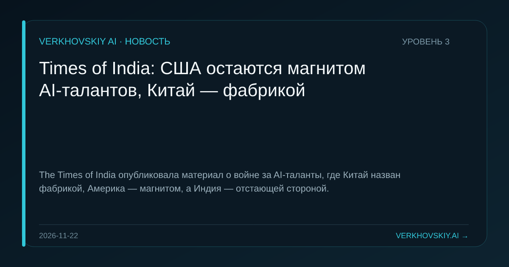

Times of India: США остаются магнитом AI-талантов, Китай — фабрикой
The Times of India опубликовала материал о войне за AI-таланты, где Китай назван фабрикой, Америка — магнитом, а Индия — отстающей стороной.

The Times of India опубликовала материал о войне за AI-таланты, где Китай назван фабрикой, Америка — магнитом, а Индия — отстающей стороной.